Event Highlights
Take a look at some memorable moments from our outreach events!
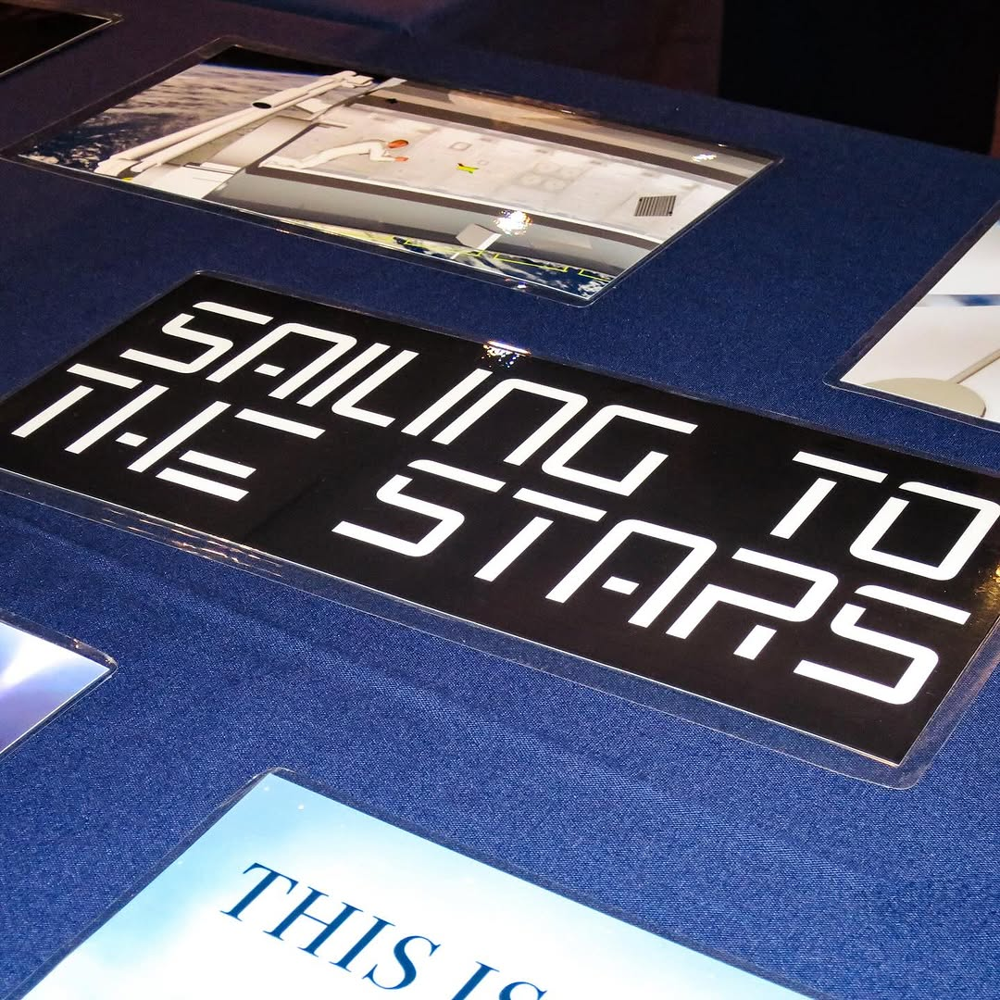
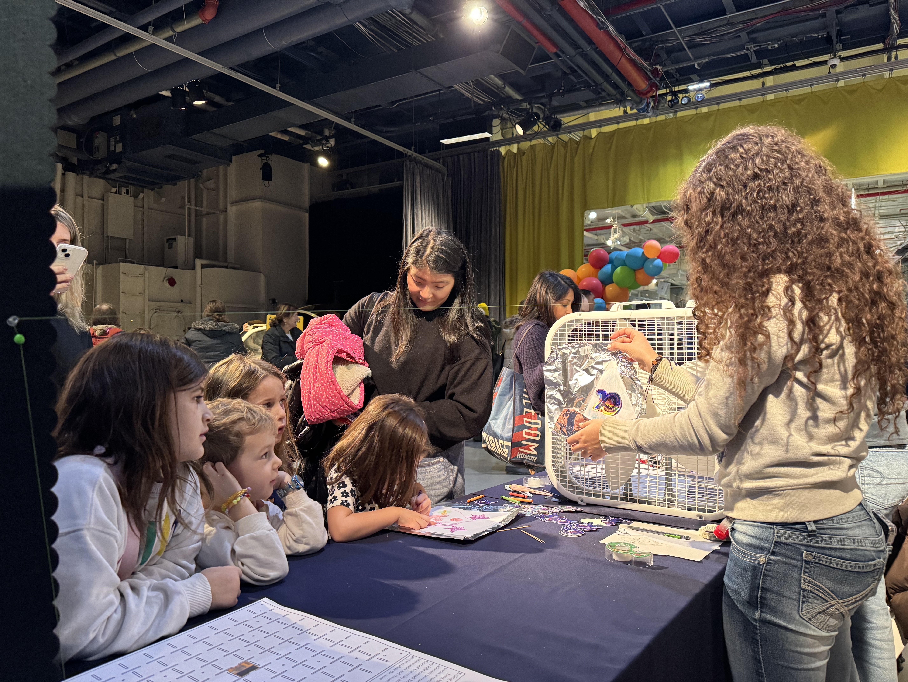
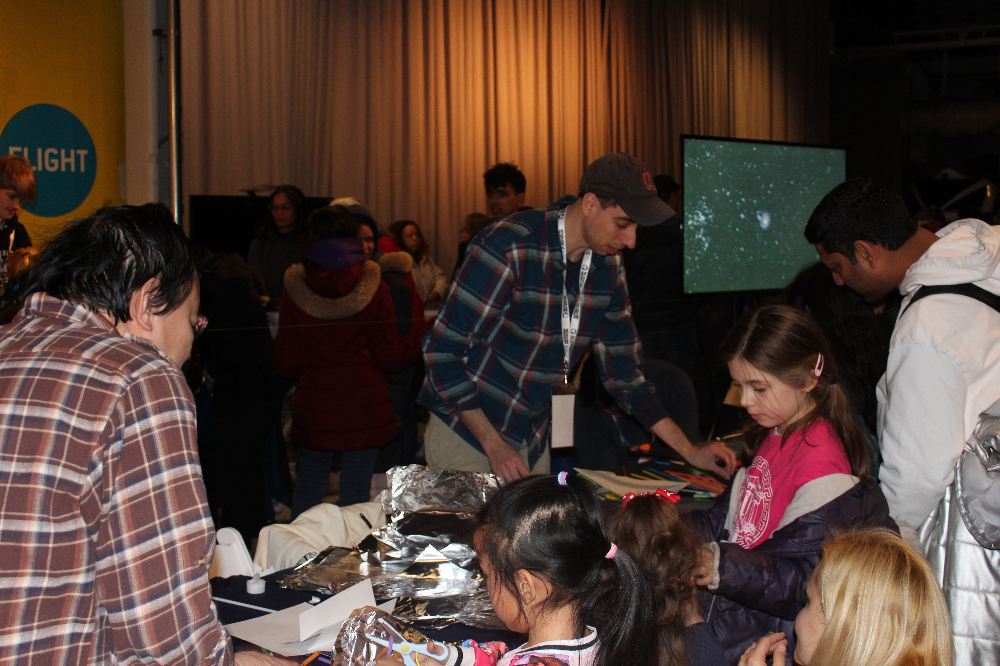
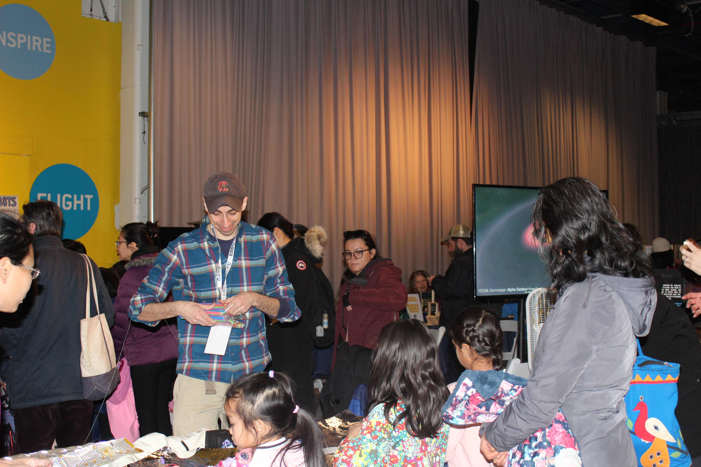
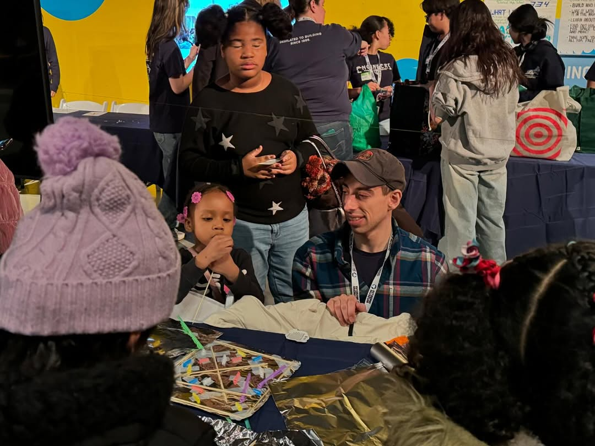
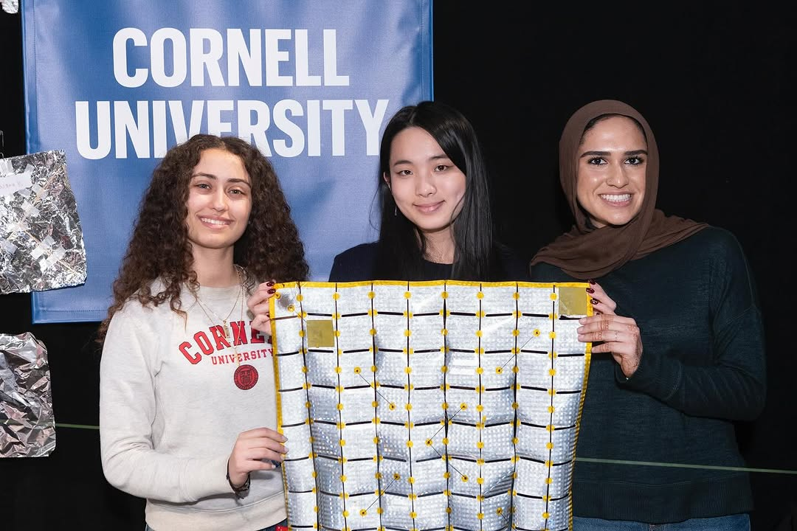
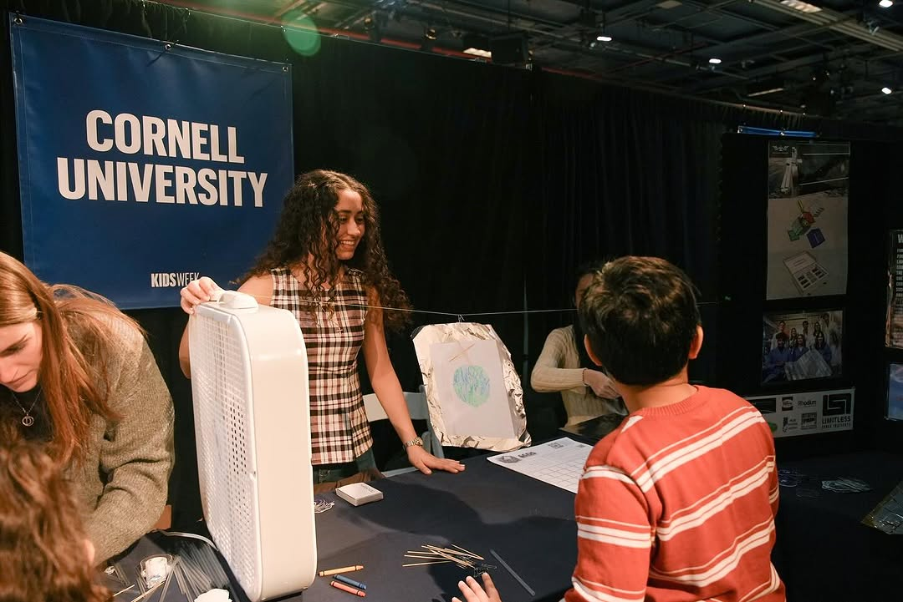

When the Sailing to the Stars mission was initially proposed, advancing aerospace research wasn't the team's only goal. Outreach has been a significant part of the mission since the beginning. The initial STEM engagement and outreach goals were to provide hands-on experience with spacecraft engineering to students interested in pursuing careers in STEM fields, conduct outreach programs and workshops, and engage the public with social media, talks, and events. Since inception, the team can say with confidence that they have made great progress in fulfilling these goals. Our students have attended four events already, with more in the works.
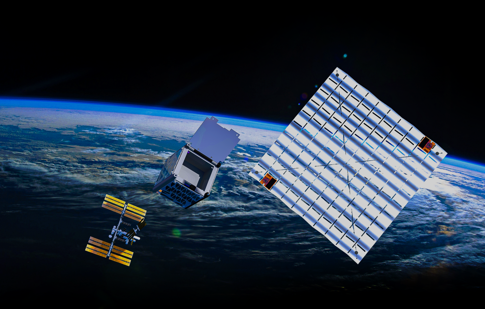
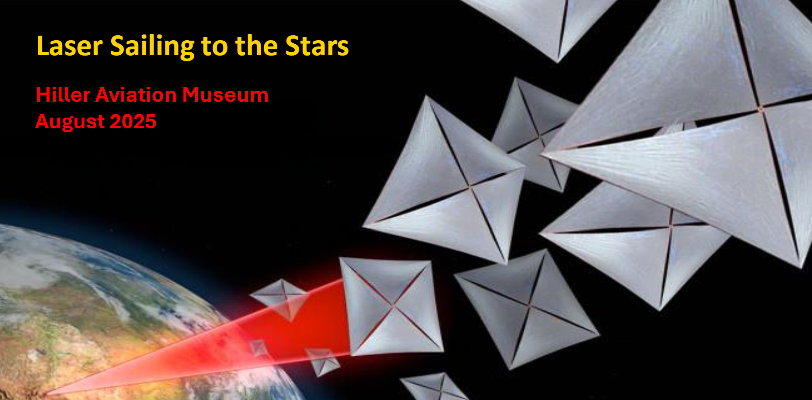
Sailing to the Stars held an interactive exhibit at the Hiller Aviation Museum in California.
In March 2025, the team attended Expanding Your Horizons again, this time hosting a workshop for the high school-aged students. They set up an activity in which students built their own light-sails, optimized designs within constraints, and even worked with a set budget. About 300 students attended the conference!
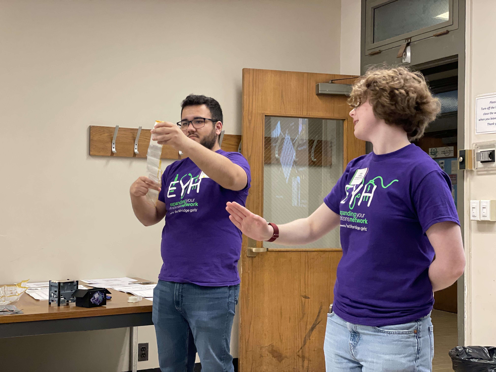
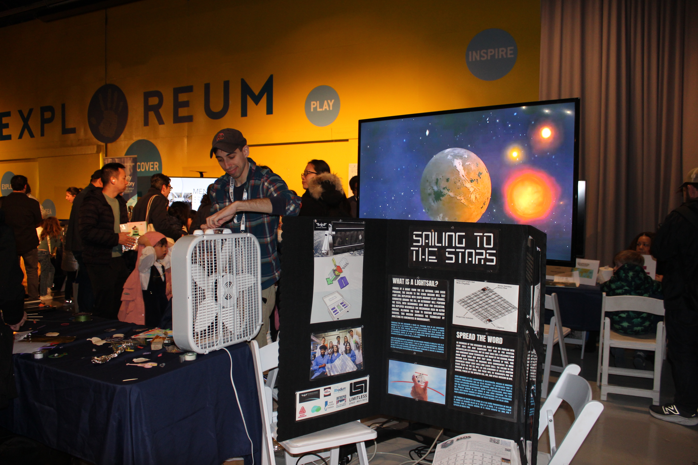
At Girls in Science and Engineering Day, also held at the Intrepid Museum, the team shared the mission's research on light-sail deployment methods with future generations of aerospace engineers. Attendees were able to participate in our light-sail themed activities, giving them a glimpse of life as a space pioneer. They had over 200 visitors at our table.
This year, our students hosted tables at two Intrepid Museum events in New York City: Kids Week and Girls in Science and Engineering Day. Intrepid invites select partners to host tables at the Intrepid museum every year for Kids Week, and this year the team was honored to be invited. Our students had one of the most successful tables, engaging over 1700 visitors with hands-on activities in which we taught them about light sails. See their interview with NASA Spaceflight here: Twitch Livestream
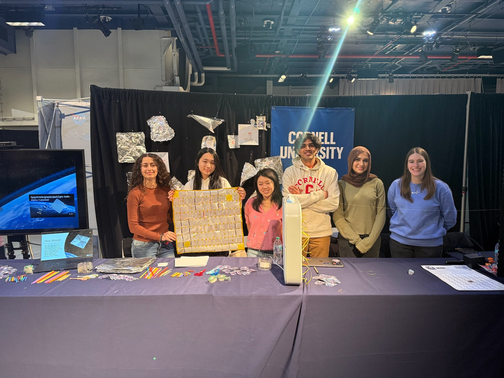
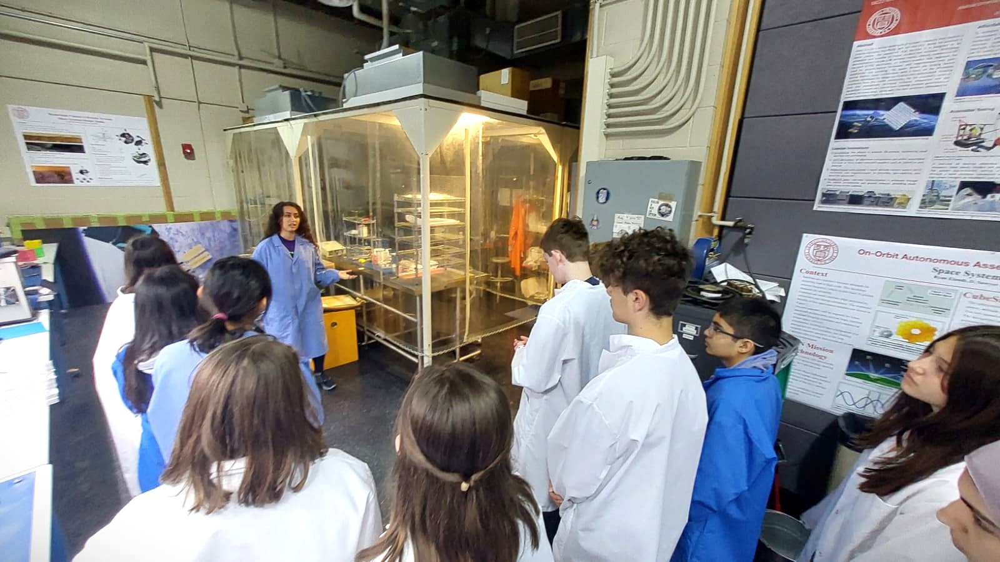
In 2024, the team participated in Expanding Your Horizons, a one-day conference hosted by Cornell catered to 7th-10th grade students, showing them around our lab.
Take a look at some memorable moments from our outreach events!







Highlights and features from our outreach appearances and events.